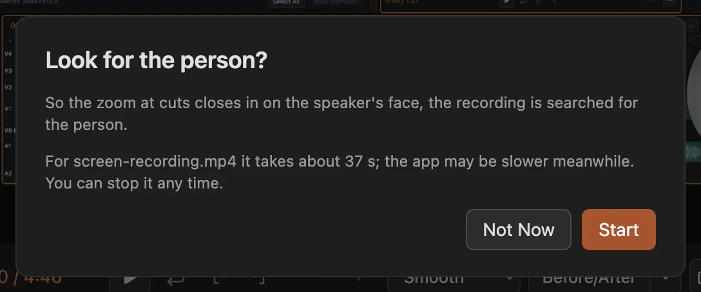
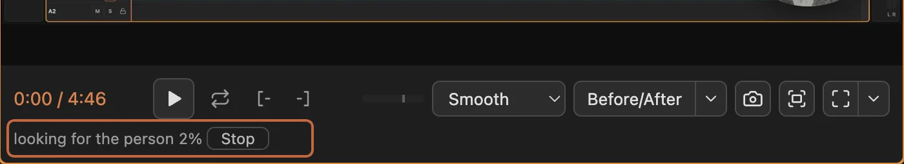

Running work and asked work
Nothing heavy starts by itself. Long work on your computer asks first, work that costs money asks first, and everything running can be stopped.

It asks first
Work that takes a while on this computer opens a question first, such as Make the animation?, Look for the person?, Prepare the person mask? or Prepare a playback copy? It says what the work is for and about how long it takes. Start or Not Now.
Your answer is kept in this project. To be asked again, open Settings › General › Asked work and press Reset Answers to Asked Work.
Paid work asks too
Work that sends something to a paid service on your account asks before the first time: cloud transcription, a sound effect or music from ElevenLabs. Animations warn that they are among the heaviest uses of your AI model.
When an AI assistant connected over MCP asks for heavy or paid work, you decide in the app whether it runs.
Running work
Under the viewer, Running work lists each job with the file it works on: running with how long is left, waiting, or paused while playing, so playback stays smooth. Stop ends one.
